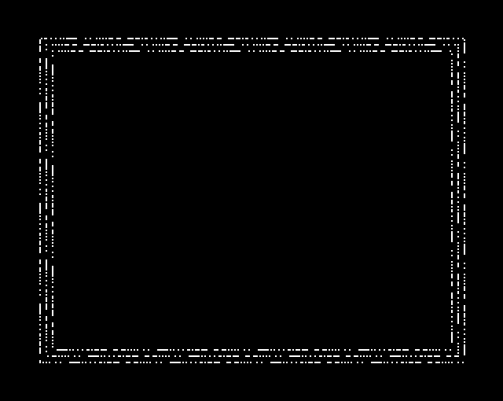

Implementation of the new VDU commands - 463 bytes (2.8%)
- §1. Unknown PLOT
- §2. Reset fill patterns and dot-dash line pattern
- §3. Intercepting VDU 22 (MODE change) and VDU 25 (PLOT command)
- §4. Move graphics cursor and finish PLOT command
- §5. vdu23SChooseOrSGet
- §6. Extended Vector VDU Routine
- §7. Define a dot-dash line pattern
- §8. Reset all fill patterns
- §9. Define simple fill pattern
For PLOT commands we don't know about, we finish up by restoring the soft character definitions, then send it along for other ROMs to check.
.unknownPlot = $8bb1 JSR .copyWorkspaceCacheBackIntoCharacterDefinitons .passOnPLOT = $8bb4 LDA .vdu25ParameterPlotType CLC JMP (.vectorVDUVLow)
§2. Reset fill patterns and dot-dash line pattern.
Preserves A, X, Y
.resetFillPatternsAndDotDashPattern = $8bbb PHA } TXA } PHA } remember A,X,Y TYA } PHA } JSR .resetPatternFillsToDefaults LDA #0 JSR .setDotPatternAndRepeat PLA } TAY } PLA } recall A,X,Y TAX } PLA } RTS
§3. Intercepting VDU 22 (MODE change) and VDU 25 (PLOT command).
The trampoline code (see Chapter 9: Trampoline code for OSWRCH) that intercepts OSWRCH sends VDU 22 (MODE) and VDU 25 (PLOT) here. On Entry: Carry set for VDU 22 (MODE change) Carry clear for VDU 25 (PLOT command) PLOT Codes | Effect -------------------------+------------------------------------------------------------- $00 - $07 ( 0 - 7) | Line: Both ends, no pattern $08 - $0F ( 8 - 15) | Line: End omitted, no pattern $10 - $17 (16 - 23) | Line: Both ends, pattern restarts $18 - $1F (24 - 31) | Line: End omitted, pattern restarts $20 - $27 (32 - 39) | Line: Start omitted, no pattern $28 - $2F (40 - 47) | Line: Neither end, no pattern $30 - $37 (48 - 55) | Line: Start omitted, pattern continues $38 - $3F (56 - 63) | Line: Neither end, pattern continues $40 - $47 (64 - 71) | Plot single point $48 - $4F (72 - 79) | Horizontal line fill left and right to non-background $50 - $57 (80 - 87) | Fill a triangle $58 - $5F (88 - 95) | Horizontal line fill right to background $60 - $67 (96 - 103) | Rectangle fill $68 - $6F (104 - 111) | Horizontal line fill left and right to foreground $70 - $77 (112 - 119) | Parallelogram fill $78 - $7F (120 - 127) | Horizontal line fill right to non-foreground $80 - $87 (128 - 135) | Flood fill to non-background $88 - $8F (136 - 143) | Flood fill to foreground $90 - $97 (144 - 151) | Circle outline $98 - $9F (152 - 159) | Circle fill $A0 - $A7 (160 - 167) | Circular arc $A8 - $AF (168 - 175) | Circular segment $B0 - $B7 (176 - 183) | Circular sector $B8 - $BF (184 - 191) | On screen rectangle copy or move $C0 - $C7 (192 - 199) | Ellipse outline $C8 - $CF (200 - 207) | Ellipse fill $D0 - $D7 (208 - 215) | [unused] $D8 - $DF (216 - 223) | [unused] $E0 - $E7 (224 - 231) | [unused] $E8 - $EF (232 - 239) | Sprite plot $F0 - $F7 (240 - 247) | [unused] $F8 - $FF (248 - 255) | [unused]
.vdu22Or25EntryPoint = $8bce JSR .getPrivateWorkspaceAddress get workspace address BCS .resetFillPatternsAndDotDashPattern if (MODE change) then branch (to reset patterns and line style) PLOT LDX .vduPixelsPerByteMinusOne BEQ .passOnPLOT if (not a graphics MODE) then branch For the duration of the PLOT command, we cache the soft font definitions from $0C00 - $0C66 into private workspace memory to give us memory at $C00 (a fixed memory location). This helps with access speed and size, and uses fewer registers than having to use indirect addressing to access our private workspace. Copy $0C00 - $0C66 into workspace[$99-$FF] LDA #.workspaceOffsetSoftFontCache STA .privateWorkspaceLow LDY #$66 loop counter - LDA .softCharacterDefinitions,Y STA (.privateWorkspaceLow),Y DEY BPL - INY STY .privateWorkspaceLow reset workspace low to zero LDY #.workspaceOffsetHasCachedSoftCharacterDefinitions LDA #$80 STA (.privateWorkspaceLow),Y mark as cached LDX #.vdu25ParameterXLow - .vduVariablesStart X is offset to X Coordinate (low) JSR .plotConvertExternalRelativeCoordinatesToPixels LDY #5 Y=5 (invalid GCOL mode) LDA .vdu25ParameterPlotType AND #$C3 check for one of (0,4,8,12,16,20,24, 28,32,36,40,44,48,52,56,60) BEQ .setGraphicsCursorPositionAndFinishPLOT if (line move relative or absolute) then branch AND #3 check for one of (64,68,72,76,80,84, 88,92,96,100,104,108,112,116,120,124, 128,132,136,140,144,148,152,156,160, 164,168,172,176,180,184,188,192,196, 200,204,208,212,216,220,224,228,232, 236,240,244,248,252) BEQ .skipStandardColourModes if (move relative or absolute for a non-line) then branch DEY Y=4 (inverse colour GCOL mode) LSR BCC .skipStandardColourModes if (logical inverse colour) then branch TAX draw using foreground colour (X=0) or background colour (X=1) LDY .vduForegroundGCOLMode,X Y=foreground or background GCOL mode (0=Normal, 1=OR, 2=AND, 3=EOR, 4=Invert) LDA .vduForegroundGraphicsColour,X } TAX } X = foreground or background } graphics colour .skipStandardColourModes = $8c0d TYA A = GCOL mode (0=Normal, 1=OR, 2=AND, 3=EOR, 4=Invert) PHA Set up mask variables for the GCOL Mode AND #$0F make sure it is in range (0-15) TAY Y = GCOL mode LDA .gcolPlotOptionsTable,Y STA .gcolModeMask0 LDA .gcolPlotOptionsTable + 1,Y STA .gcolModeMask1 LDA .gcolPlotOptionsTable - 1,Y STA .gcolModeMask2 LDA .gcolPlotOptionsTable + 4,Y STA .gcolModeMask3 PLA A = GCOL mode top nybble AND #$F0 get top nybble LSR divide by two (we get multiples of 8) BNE .copyPattern if (we want to use a pattern) then branch solid colour fill STX .fillPattern } STX .fillPattern + 1 } STX .fillPattern + 2 } STX .fillPattern + 3 } store solid graphics colour in } fillPattern STX .fillPattern + 4 } STX .fillPattern + 5 } STX .fillPattern + 6 } STX .fillPattern + 7 } BEQ .doneCopyingPattern ALWAYS branch .copyPattern = $8c46 LDX #7 loop counter. TAY Y = 8,16,24,32 i.e. Y = (pattern 1 to 4) * 8 DEY Y = 7,15,23,31 i.e. Y = (pattern 1 to 4) * 8 - 1 LDA #.workspaceOffsetCurrentPatterns STA .privateWorkspaceLow - LDA (.privateWorkspaceLow),Y copy from workspace[$6C+Y] pattern 1 = workspace[$6C to $73] pattern 2 = workspace[$74 to $7B] pattern 3 = workspace[$7C to $83] pattern 4 = workspace[$84 to $8C] STA .fillPattern,X copy to $0C00+X DEY DEX BPL - loop 8 times .doneCopyingPattern = $8c57 LDA .vdu25ParameterPlotType get plot type AND #$F8 mask out the bottom three bits LSR } divide by four to get the offset LSR } within the table of PLOT routines TAX X = offset into array LDA .plotTypeRoutineTable,X } STA .vduTempStoreDA } get address of routine from table LDA .plotTypeRoutineTable + 1,X } STA .vduTempStoreDB } JSR .getPrivateWorkspaceAddress JMP (.vduTempStoreDA) call routine
§4. Move graphics cursor and finish PLOT command.
Moves the graphics cursor by a relative amount or to an absolute position. Also restores the soft font definitions, since this is called at the end of each PLOT command.
.setGraphicsCursorPositionAndFinishPLOT = $8c6f Update graphics cursors: vduOldGraphicsCursor = vduGraphicsCursor vduGraphicsCursor = vdu25Parameter LDX #3 loop counter - LDA .vduGraphicsCursorPixelsXLow,X get current graphics cursor STA .vduOldGraphicsCursorPixelsXLow,X store in old graphics cursor LDA .vdu25ParameterXLow,X get new parameter STA .vduGraphicsCursorPixelsXLow,X store in current graphics cursor DEX BPL - if (still bytes to copy) then branch (loop back) Copy the soft character definitions previously stored in the private workspace using code at .vdu22Or25EntryPoint back into the original memory at $0C00. Preserves X .copyWorkspaceCacheBackIntoCharacterDefinitons = $8c80 JSR .getPrivateWorkspaceAddress Copy memory from [workspace + $99,workspace + $FF] to [$0C00, $0C66] LDA #.workspaceOffsetSoftFontCache STA .privateWorkspaceLow start address (low) LDY #$66 loop counter - LDA (.privateWorkspaceLow),Y STA .softCharacterDefinitions,Y DEY BPL - INY Y = 0 STY .privateWorkspaceLow workspaceLow = 0 TYA A = 0 LDY #.workspaceOffsetHasCachedSoftCharacterDefinitions STA (.privateWorkspaceLow),Y mark as not cached RTS
.vdu23SChooseOrSGet = $8c9a LDA .vdu23NParameter BNE .vdu23SGet Handle 'SChoose' LDA .vdu23SChooseOrSGetSpriteNumberParameter JMP .sChooseA .vdu23SGet = $8ca5 Check for 'SGet' CMP #1 BNE .vdu23Unknown Handle 'SGet' LDA .vdu23SChooseOrSGetSpriteNumberParameter JMP .sgetInternal .vdu23Unknown = $8caf LDA #27 VDU 27 = do nothing JMP .passThroughWithCarrySet
§6. Extended Vector VDU Routine.
When a VDU sequence that is unknown to the OS is used, this routine executes allowing our code to process new VDU functionality.
.extendedVectorVDURoutine = $8cb4 JSR .getPrivateWorkspaceAddress BCC .passThrough if (already handled) then branch LDX .vduPixelsPerByteMinusOne BEQ .passThroughWithCarrySet if (non-graphics mode) then branch CMP #6 check for VDU 23,6 = dot-dash line BEQ .defineDotDashLine if (dot-dash line) then branch BCC .defineFullPattern if (full pattern) then branch CMP #11 BCC .passThroughWithCarrySet if (A < 11) then branch BEQ .resetPatternFillsToDefaults if (VDU 23,11) then branch CMP #16 check for VDU 23,{12 to 15} BCC .defineSimplePattern if (simple pattern) then branch CMP #27 BEQ .vdu23SChooseOrSGet if (VDU 23,27) then branch fall through... .passThroughWithCarrySet = $8cd2 SEC carry set means 'not yet handled' .passThrough = $8cd3 PHP PHA JSR .swapWorkspaceWithVDUVectors swap out our VDUV PLA PLP JSR .jumpToVDURoutine execute original VDU routine PHA JSR .swapWorkspaceWithVDUVectors swap back in our VDUV PLA RTS .jumpToVDURoutine = $8ce3 JMP (.vectorVDUVLow)
§7. Define a dot-dash line pattern.
The line pattern is an array of (up to) 64 on / off bits (8 bytes)

10 REM dotted border 20 MODE 1:VDU23,6,&54,&48,&3F,&A9,&26,&BB,&C3,&9D 30 *FX163,242,64 40 T%=&35:SX%=16:SY%=16 50 FOR N%=0 TO 2 60 MOVE 100+N%*SX%,100+N%*SY% 70 PLOT T%,1180-N%*SX%,100+N%*SY% 80 PLOT T%,1180-N%*SX%,924-N%*SY% 90 PLOT T%,100+N%*SX%,924-N%*SY% 100 PLOT T%,100+N%*SX%,100+N%*SY% 110 NEXT 120 VDU 23,1,0;0;0;0;:A$=GET$:VDU 23,1,1;0;0;0;
.defineDotDashLine = $8ce6 PHA LDY #.workspaceOffsetDotDashRepeatLength LDA (.privateWorkspaceLow),Y INY workspace[dot-dash bits remaining] = STA (.privateWorkspaceLow),Y dot-dash line pattern bits remaining INY LDA #$80 STA (.privateWorkspaceLow),Y workspace[dot-dash bit] = $80 i.e. one bit set for reading next bit from pattern INY ASL workspace[pattern byte] = current byte STA (.privateWorkspaceLow),Y within dot-dash line pattern PLA .defineFullPattern = $8cf8 SEC A = 2,3,4,5,6 (2-5 = full pattern, 6 = dot-dash line pattern) SBC #1 ASL ASL ASL ADC #.workspaceOffsetCurrentPatterns TAY DEY Y = ((A-1)*8) + .workspaceOffsetCurrentPatterns - 1 Y = $73,$7B,$83,$8B,$93 [NOTE: Could do this to save three bytes: ASL ASL ASL CLC ADC #.workspaceOffsetCurrentPatterns - 9 TAY ] LDX #7 - LDA .vdu23NParameter,X } STA (.privateWorkspaceLow),Y } DEY } copy vdu parameters into the } workspace pattern DEX } BPL - } RTS
.resetPatternFillsToDefaults = $8d0e LDA .vduCurrentScreenMODE BNE + if (not MODE 0) then branch SEC SBC #1 A = $FF [NOTE: could just LDA #255 to save a byte] + AND #3 (MODE 0,1,2,3,4,5,6,7) AND 3 = (3,1,2,X,0,1,X,X) CLC ADC #1 (A AND 3) + 1 = (4,2,3,X,1,2,X,X) ASL ASL ASL ASL ASL ((A AND 3) + 1) * 32, i.e. MODE 0, 1, 2, 3, 4, 5, 6, 7 A $80, $40, $60, -, $20, $40, -, - TAX X is the offset to the default patterns for the current MODE [NOTE: alternatively this is seven bytes shorter: .offsetToDefaultTable !byte $80, $40, $60, $00, $20, $40 .resetPatternFillsToDefaults LDY .vduCurrentScreenMODE LDX .offsetToDefaultTable,Y ... ] Copy the default patterns into the right place in the private workspace LDY #32 loop counter LDA #.workspaceOffsetCurrentPatterns - 1 offset in workspace to store current patterns (minus 1) STA .privateWorkspaceLow .privateWorkspaceLow = .workspaceOffsetCurrentPatterns - 1 - LDA .defaultPatterns - 1,X read default patterns from table STA (.privateWorkspaceLow),Y store 32 bytes of default patterns in workspace at offset $6B-$8A DEX DEY BNE - RTS
§9. Define simple fill pattern.
On Entry: A: pattern number 12-15 carry clear
.defineSimplePattern = $8d31 SBC #11 A = 0-3 ASL ASL ASL ADC #3 A = 3,11,19,27 (offset to store within workspace patterns) [NOTE: Could be ASL:ASL:ASL:SBC #32 to save 2 bytes] PHA Loop to get and mask colour information for current mode LDX #7 - LDA .vdu23NParameter,X AND .vduNumberOfLogicalColoursMinusOne STA .vduTempStoreDA DA = parameter[X] AND numColours-1 LDA .vduNumberOfLogicalColoursMinusOne } AND #7 } ADC .vduTempStoreDA } DA += number of colours - 1 TAY } LDA .twoColourMODEParameterTable - 1,Y look up colour data in table STA .vdu23NParameter,X parameter[X] = colour data DEX decrement loop counter BPL - if(not done yet) then branch (loop back) Single or double pixels LDA #%01010101 LDX .vduCurrentScreenMODE BNE + LDA #%00110011 MODE 0 uses double pixels + STA .vduTempStoreDA store mask PLA A = 3,11,19,27 CLC ADC #.workspaceOffsetCurrentPatterns A = offset to store pattern within workspace TAY Y = A = offset to store pattern within workspace Loop to set simple pattern LDX #7 loop counter, decrements twice (7,5,3,1) - LDA .vdu23NParameter,X pixel value DEX decrement loop counter EOR .vdu23NParameter,X EOR previous pixel value AND .vduTempStoreDA AND mask EOR .vdu23NParameter,X EOR previous pixel value STA (.privateWorkspaceLow),Y INY } INY } INY } INY } STA (.privateWorkspaceLow),Y } workspace[Y] = A DEY } workspace[Y+4] = A DEY } Y-- DEY } DEY } DEY } DEX decrement loop counter BPL - if (not done yet) then branch (loop back) RTS